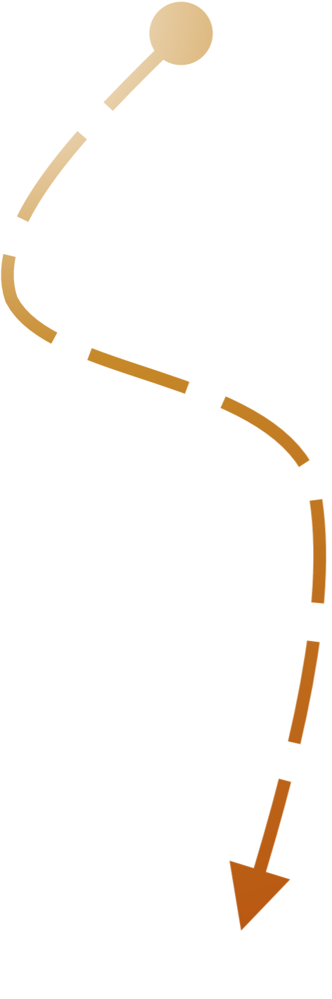

Project

Human Practices
Team
Education & Communication
Education & Communication

Human Practices
2020 was a challenging year. Due to COVID-19, the whole world had to adjust to a new lifestyle that came with its ups and downs. Considering this, we chose to do this project over the course of two years. Our Human Practices work reflects that, so, to understand how we got to our current work, we have to look back at what we did last year.
aSAP 1.0: 2020 Review
 As explained in our Project Description, we chose to tackle maple syrup in 2020 because of our own cultural attachment to maple syrup. That year, our Human Practices work consisted mostly of selecting the problem we wanted to solve within the industry and designing a responsible solution for it. In 2020, we therefore centered our efforts around the design of our project and adapting it to the maple production industry in Quebec, focusing on local needs and scientific expertise.
As explained in our Project Description, we chose to tackle maple syrup in 2020 because of our own cultural attachment to maple syrup. That year, our Human Practices work consisted mostly of selecting the problem we wanted to solve within the industry and designing a responsible solution for it. In 2020, we therefore centered our efforts around the design of our project and adapting it to the maple production industry in Quebec, focusing on local needs and scientific expertise.
Our priorities
Feasability
From a scientific standpoint, in order for us to help producers, we wanted to make sure we understood everything that went into creating quality maple syrup and the different problems that could occur. Only knowing that, could we find what problem we could realistically solve within this project.
Innovation
We wanted to tackle something that people were currently stuck with, and bring in a new solution that only people from our field could bring.
Ethics
We also wanted to ensure that our project would be adapted to and wanted by the field we were creating it for.
Gathering knowledge
To ethically design a project that was as adapted as possible to the field we were making it for, we needed to gather much more information on the field. Here’s a quick rundown of what we did in 2020 to gain the knowledge that would guide our project’s choice and design:
- We contacted Marie Filteau, a researcher at the Department of Food and Nutrition Sciences at Laval University, to learn more about the science behind maple syrup: the microbiology of the syrup, the impact of seasonal change on the end product, the components that create the flavors of maple syrup, etc.
- We got suggestions from Jean-François Sénéchal, a teacher in the Department of Philosophy at Laval University, on what ethical considerations we could explore during our project.
- We surveyed 50 maple syrup producers on their needs, priorities, interest in more research and openness to using a technological agent to improve quality in their products.
- We discussed what current maple research was being done and how our project could fit into it with Luc Lagacé, a researcher at the main maple research lab in Quebec (Centre ACER) and with Vincent Poisson, a forest engineer that helps producers with technical aspects of maple syrup production.
- We briefly informed ourselves about the legislation around maple syrup through contacting representatives for the Ministère de l'Agriculture, des Pêcheries et de l'Alimentation (MAPAQ), the government entity in charge of agriculture, fishing and food in Quebec.
- We discussed the lack of current research on ropy syrup with representatives from the Producteurs et productrices acéricoles du Québec (PPAQ, French for Maple Producers of Quebec, a private maple syrup federation in Quebec).
- We discussed our more tentative project ideas and solutions with Jean-Michel Lavoie, a professor at the University of Sherbrooke in the Department of Chemical Engineering and Biotechnology Engineering, and found out about the challenges we would face.
These experts’ input on what to prioritise and what to look into is what brought our project to where it is in its 2021 edition: an enzymatic solution to transform ropy syrup from a food waste product into a useful base product that can be used in different industries.

aSAP 1.0: Progress in 2021
Our priorities
Tangible Impact
In 2021, a big focus of our project was creating a tangible impact: would our project be useful long-term for producers, or would it simply fall flat after iGEM ended? We believed that it was crucial for us to engage with the organizations most likely to be interested in the final project to ensure that we had a lasting impact on the industry we hoped to help.
Food production is highly regulated in Quebec. Long-term, through aSAP, using enzymatic methods to solve ropiness in maple syrup, we seek to impact Quebec’s legislation regarding the sale of derivative maple products.
Social Acceptability
Our other area of focus for our project in 2021 was the social acceptability of our project. We believe that the implementation of synthetic biology in the maple industry could have a positive influence in this area and in agri-food in general.
Speaking with experts, producers and representatives of regulatory organizations helped us understand the issues in the maple industry. Last year, we came up with a solution; we only needed the public to know about it and to get its approval.
We already did a quick radio interview about the subject last year to raise awareness, but this year we also wanted to know what the public actually thought of what we were doing, while still continuing to raise awareness about the benefits of synthetic biology.
Gathering knowledge
To ethically design a project that was as adapted as possible to the field we were making it for, we needed to gather much more information on the field. Here’s a quick rundown of what we did in 2020 to gain the knowledge that would guide our project’s choice and design:
Collaborations with the PPAQ
First, we engaged in several discussions about the feasibility of our project with the PPAQ since they are national regulators of the management of maple syrup and key actors in international maple syrup sales. Among several subjects such as maple syrup science and finances, we talked about the origin of the regulation of ropy maple syrup in order to understand the underlying criterias used to classify this syrup as unsafe for consumption. Knowing only a part of the entire regulation process, the PPAQ suggested that we talk with the MAPAQ to fully understand the motives behind the ban of this defective syrup. This led to another meeting with this ministry instance, our second interaction since 2020.
This collaboration also led to planning an approach to present the final product to consumers. It involved:
- Studying the microbiote of ropy maple syrup and removing possible toxins
- Exploring the laws and regulations
- Planning our approach with the MAPAQ
- Processing and homogeneity of the product
- Approving our methods and product with relevant organizations
The first four goals were addressed by our project 2021’s approach. The first one involved our microbiology study (see Going above and beyond), the second and third involved our talk with the MAPAQ and the fourth was explored in our modeling (see Project Modeling). The fifth and final goal will take place outside of iGEM in order to ensure aSAP will be led by said organizations and see the light of day. We are actively working on passing on our project to a capable organization we have worked with since the beginning of aSAP.
MAPAQ
Following this, we discussed the legal frame surrounding our project more in detail with representatives for the MAPAQ again to ensure that our goal for a tangible impact was realistic in the current legal context as well. Through this interview, we realised that, short-term, since we can’t expect laws to change drastically within less than a year, we would have to ensure our project would be accepted by all maple syrup authorities. Due to that fact, we also learned about other authorities we had not contacted yet or known about. This led to our better understanding of the way regulations are made, mainly that the MAPAQ is not necessarily the sole decision maker regarding maple syrup. We would have to convince other actors of the feasibility and innovation of our project. However, the MAPAQ informed us that our project attracted their attention and that regulations on ropy maple syrup may need some updates, since it hasn’t been touched in 40 years. That could help our project to become even more realistic and prevent producers from being punished by the production of ropy syrup.
As a part of this, we wanted to figure out the legal pitfalls associated with our solution to find a way around them, increasing the chances of our project making the jump from theory to practice in the industry. However,
Implementation of our project could also be possible with the help of the MAPAQ, since they encourage and help new projects and enterprises to innovate and make the agri-food industry better in Quebec. That will push the fruition of the project to be led by existing labs or enterprises and genuinely help maple producers.
Lastly, the MAPAQ having different data on ropy syrup we haven’t seen before, it was confirmed that this defective syrup is a real problem that isn’t talked about enough or looked into much. Before that, we only had suspicions by talking to professionals and producers, but could not confirm anything because of the lack of proof and data.
Social Acceptability
For the social acceptability side of things, we conducted a survey with consumers on their feelings about a project like ours to find out if their priorities aligned with ours.
Survey
Laval University is the oldest higher education institution in America that teaches in French. Each year, more than 43 000 people register to take classes there. We wanted to reach out to every single one of them who were Canadian to know their opinion on our initiative. We created a survey with 18 questions distributed in three parts: one about iGEM and synthetic biology in general, one on the ropy syrup problem and a last one the acceptability of dextranase in ropy maple syrup. We received more than 350 responses from students or staff members of our university, but the truth is, we wanted to reach more…
Analysis
From the 371 answers we received, 298 were used for the analysis of the consumer survey on the use of dextranase in ropy syrup. The questions were mostly yes or no questions or based on the Likert scale. Also, we allowed comments for each question.
After analyzing the survey, three main conclusions stuck out:
Regarding the importance of maple syrup in general:
a. 88% of respondents believe that the maple syrup industry in Quebec represents a fundamental pillar for the Canadian economy. This data is reinforced with the average consumption per consumer being 6 canes per year.
b. 97% of consumers are proud of maple syrup in Quebec. One can add as a reason, according to the respondents, that it is of very good quality thanks to the control by the Union of Agricultural Producers (UPA).
Integrated Human Practices
Experts and producers
- Last year, we discussed our intention of making a difference in the maple syrup industry with experts. We spoke about the causes and effects of flavor defects in maple syrup and it made us realize that we wanted to tackle one of them. To choose which one, we did a survey for maple producers and discussed the pertinence of working on a flavor defect that was not actively researched: ropy syrup.
- Concerning the technical aspect of our project, we used scientific knowledge to engineer our dextranase and make it work. We based our experiments on existing protocols like the Nelson-Somogyi method, but we also created our own with the help of teachers and research professionals.
PPAQ and MAPAQ
- Meetings with those regulatory organizations helped us modify the trajectory of our project to make it more realistic. For instance, our project specifically targets ropy syrup which is already stored in order to keep the rest of the maple syrup production enzyme-free. We also decided that we wanted our dextranase to be considered a food additive after learning about the strict regulation concerning the fact that maple syrup needs to be 100% natural.
- After seeing that the PPAQ and the MAPAQ added some concerns about our project we clarified our intentions with them, but also thought about other initiatives like using aSAP in the cosmetic industry or the animal food industry. This is one of many compromises we had to make in order to ensure a feasible implementation of our product. The revalue of waste is more important than the industry where we could sell it.
- To ensure that our product was ethical, we agreed from the start to not call it maple syrup and we put emphasis notably in our consumer survey to use the appellation “derivative product.” Our goal is not to trick anyone into thinking that ropy syrup treated with dextranase is 100% natural maple syrup, but more to just revalue a product for multiple reasons like the environmental sake.
- Our project safety was guaranteed by our discussions with the regulatory organizations. In fact, we did not yet create an edible or any product of any kind containing our dextranase. We waited, because it was important to show the efficacy of our dextranase before using it, commercializing it. We didn’t want to give false hopes.
Survey
- According to the consumers survey, we confirmed that consumers actually care about the environmental issues that are present in the maple syrup industry. They are ready to learn about our dextranase and even to make some concessions by buying products (not necessarily edible) made with ropy syrup treated by dextranase. Also, the majority of our survey respondents affirmed that maple syrup had a special place both as a Canadian pride and as a pillar for our economy. This helped confirm that our project was actually useful and worth working on. It also confirms that the value we chose to prioritize made sense for other Canadians.
- The survey for producers supports our choice of working on ropy syrup which can be a recurrent problem that will worsen in the future due to climate changes. This is how we chose which needs to prioritize.
- Both surveys clearly conveyed our true intentions to its audience without hiding anything. We made sure to clarify any misunderstandings to ensure a genuine communication with our target audience and our future partners.
Conclusion
- In sum, we achieve our goal to engineer a functioning dextranase for ropy maple syrup by using synthetic biology. We used variable ways to ensure that our project has and will continue to have a good impact on the world. To close the loop and make our project one of the successes of our lives, we still have to discuss with compagnies of interest. Maybe in a couple of years, the regulations concerning maple syrup, which are old, will be revised and adapted to a contemporary context. Maybe, producers, consumers and representatives we collaborated with will use a derivative product of maple syrup treated with our dextranase. Maybe aSAP will make a concrete change in the maple syrup industry that has the revalue of a waste which no one finds important to talk about.
References
1. Gouvernement du Québec. (2021, April 19). Production de Sirop d'érable (acériculture). Gouvernement du Québec. Retrieved October 4, 2021, from https://www.quebec.ca/agriculture-environnement-et-ressources-naturelles/agriculture/industrie-agricole-au-quebec/productions-agricoles/production-sirop-erable-acericulture/
2. United Nations. (2021). The sustainable development Goals REPORT 2021. The Sustainable Development Goals Report. https://doi.org/10.18356/9789210056083